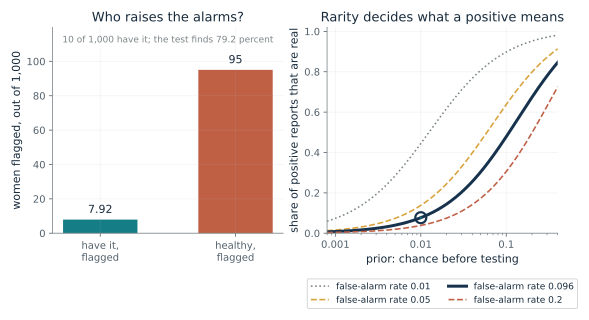
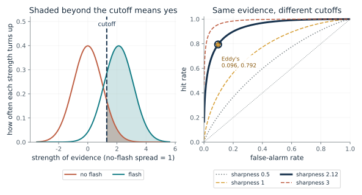
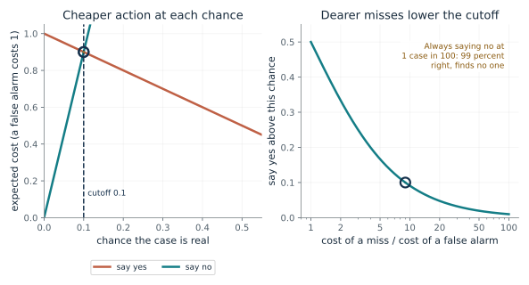
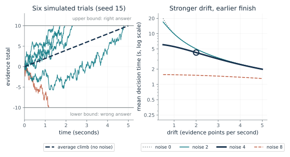
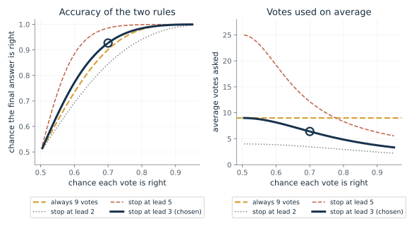
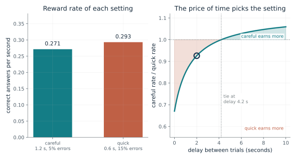
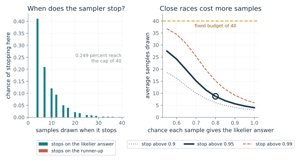

Ask for the prior (how common the event is where the test is used), the hit and false-alarm rates for that population, the cost of each kind of error and the price of waiting. Then choose the matching card: Bayes' rule for what a positive report means, the cost cutoff for where to draw the line, a lead rule or a bound for how long to keep collecting evidence, the reward rate for how the price of time moves the bound. Report the answer, the assumption it depends on, and who supplied the costs.
“A screening test finds 79 percent of cases and flags 9.6 percent of healthy people, and the condition affects 1 person in 100. A positive report arrives. How much should it change my mind, and what would change the answer?”
Use mmi-ch15-when-to-decide with the companion's AI skill package. The illustrations below also work on their own.
Why are most positive reports false when the test finds four cancers in five?
From Chapter 15, Ten women with cancer, 990 without, and 103 alarms
If a test finds 79.2 percent of cancers and wrongly flags 9.6 percent of healthy cases, what share of its positive reports are real when the condition is rare?
Of 1,000 women, 10 have cancer and the test flags about 8 of them. Of the 990 without cancer it flags about 95. So about 103 reports are positive and 8 are real. The two chances were confused: the chance of a positive report given cancer (79.2 percent) is not the chance of cancer given a positive report. The right-hand curves show that the same test means very different things at different priors.
Predict first: Before moving any slider, predict the share of positive reports that are real with the book's numbers, then predict what happens if 1 woman in 10 has cancer.

Prior: chance of the condition before testing: 0.01 · False-alarm rate: 0.096
What happens: At a prior of 0.01 about 7.92 real cases and 95 healthy women are flagged, so about 7.7 percent of alarms are real. Move the prior to 0.1 with the same test and about 48 percent are real: only the prior moved.
Of 1,000 women with a prior of 0.01, about 7.92 real cases and 95 healthy women are flagged. So 7.69 percent of positive reports are real, though the test finds 79.2 percent of cases.
- Real alarms per 1,000
- 7.92
- False alarms per 1,000
- 95
- Share of alarms that are real
- 7.69 percent
- Test finds
- 79.2 percent
Physicians in Eddy's sample put the answer near 75 percent, the hit rate, when it was near 8. Any alarm or detector, medical or not, needs the prior and the false-alarm rate before a positive result means much.
Any detector that raises an alarm behaves this way. A program can count the real and false alarms from the prior and the two rates, and recompute them when the population changes.
Show the calculation
Numerator H x prior = 0.792 x 0.01 = 0.00792. False-positive part F x (1 - prior) = 0.096 x 0.99 = 0.095. Share = 0.00792 / (0.00792 + 0.095) = 0.0769.
The equations and symbols
- pi
- the prior: the chance of the condition before any test result
- H
- the hit rate: chance of a positive report when the condition is present (0.792 here)
- F
- the false-alarm rate: chance of a positive report when it is absent
The rates describe the population the test is used on, and the prior is correct for that population. The result is an illustration of the calculation, not an individual clinical judgment.
Check your understanding: With the same test, suppose 1 woman in 10 has cancer (prior 0.1, false-alarm rate 0.096). What share of positive reports are real?
Book source: Chapter 15, Ten women with cancer, 990 without, and 103 alarms. Illustration C15-D01. Formula. Book formula with the numbers David Eddy posed in 1982 as the chapter reports them (prior 0.01, hit rate 0.792, false-alarm rate 0.096). The 1-in-10 prior is the chapter's own illustration, and the other values on the sliders are constructed. The counts per 1,000 are expected values, not a sample.
What does moving the cutoff change, and what does it leave alone?
From Chapter 15, Moving the cutoff buys hits and false alarms together
If a yes depends on both how clear the evidence is and how readily the judge says yes, which of the two does a looser cutoff change?
Each heap counts how often each strength of evidence turns up. The area of the no-flash heap beyond the cutoff is the false-alarm rate, and the area of the flash heap beyond it is the hit rate. Sliding the cutoff changes both areas at once. Pushing the heaps apart (larger sharpness) is the only way to raise hits without raising false alarms.
Predict first: Hold sharpness at 2.12. Predict what happens to the false-alarm rate when the cutoff moves from 1.3 to 2.0, and whether the hit rate falls by more or less.

Sharpness of the evidence (d-prime): 2.12 · Cutoff (spreads above the no-flash centre): 1.3
What happens: Sharpness 2.12 with the cutoff at 1.3 spreads gives a hit rate near 79.4 percent and a false-alarm rate near 9.7 percent, matching Eddy's 79.2 and 9.6 by construction: the sharpness was chosen from those two rates, so this is a reading of them, not a test. Slide the cutoff and the ringed point travels along the curve; only a different sharpness moves the curve.
With sharpness 2.12 and the cutoff 1.3 spreads above the no-flash centre, the hit rate is 79.4 percent and the false-alarm rate 9.68 percent. Move the cutoff and both rates move together; only a different sharpness changes the curve itself.
- Hit rate
- 79.4 percent
- False-alarm rate
- 9.68 percent
- Real share of alarms at prior 0.01
- 7.65 percent
- Sharpness (d-prime)
- 2.12
A stricter cutoff can cut false alarms but misses more cases, and no cutoff rescues evidence that is poor. Asking for the hit rate alone, or the false-alarm rate alone, hides the trade.
In Swets and colleagues' 1961 experiment, observers told that spots were common or rare said yes to blank trials 43 percent or 15 percent of the time, as if they moved a cutoff while seeing the same thing. Observers given payoffs moved their false-alarm rates in the expected direction, with one of three falling short of the authors' significance mark.
A classifier that outputs a score or a probability still needs a cutoff, and moving it trades hits against false alarms in just this way. The model here is a specification of that trade, not a claim about how any brain or test works.
Show the calculation
Hit = Phi(d' - c) = Phi(2.12 - 1.3) = 0.794. False alarm = Phi(-c) = Phi(-1.3) = 0.0968. At a prior of 0.01 the real share of alarms is 0.794 x 0.01 / (0.794 x 0.01 + 0.0968 x 0.99) = 0.0765. Sharpness 2.12 is the companion's reading of Eddy's two rates under equal-width normal heaps; the other sharpness values are constructed.
The equations and symbols
- d'
- sharpness of the evidence (d-prime): the gap between the heap centres, in units of the heap spread
- c
- the cutoff, measured from the centre of the no-flash heap in units of its spread
- Phi
- the area of the standard bell curve below a point; Phi(x) is the share of a heap below x
- z
- the inverse of Phi: the point with a given share of the heap below it
Two normal evidence heaps of equal width. Outside that model the sharpness number can depend on the cutoff. Eddy's test is not known to behave like this, so the star is a reading, not a fact about the mammogram.
Check your understanding: At sharpness 2.12, move the cutoff from 1.3 to 2.0. What are the new hit and false-alarm rates?
Book source: Chapter 15, Moving the cutoff buys hits and false alarms together. Illustration C15-D02. Model. The chapter describes this model in words (two bell-shaped heaps of equal width, a cutoff, shaded areas) and gives no formulas, so the equation is the companion's statement of it. The sharpness 2.12 is computed here from Eddy's two rates under that model; Eddy did not frame his test this way, and the chapter says the framing is ours. The other sharpness values and the cutoffs are constructed. Swets and colleagues' false-alarm rates of 43 and 15 percent are quoted in the chapter and are not produced here.
Where should the cutoff go when a miss costs more than a false alarm?
From Chapter 15, Moving the cutoff buys hits and false alarms together
A classifier gives a probability that a case is real. If a miss costs 9 times a false alarm, at what probability should it say yes?
Saying yes to a case that is real with chance p costs (1 - p) false alarms in expectation. Saying no costs p misses. The two costs are equal at p equal to C_fa over C_fa plus C_miss, and yes is cheaper above that. With equal costs that point is one half; with a miss costing 9 times as much it is 0.1.
Predict first: If a miss costs 19 times a false alarm, predict the cutoff before moving the slider.

Cost of a miss / cost of a false alarm: 9 · Chance the case is real: 0.1
What happens: At a cost ratio of 9 the cutoff is 0.1, and at a chance of exactly 0.1 saying yes and saying no cost the same, 0.9 each. Anything above 0.1 favors yes.
With a miss costing 9 times a false alarm, the cheapest rule says yes above a chance of 0.1. At a chance of 0.1, saying yes costs 0.9 and saying no costs 0.9, so the cheaper action is: equal cost (a tie).
- Say yes above chance
- 0.1
- Cost of saying yes
- 0.9
- Cost of saying no
- 0.9
- Cheaper action
- equal cost (a tie)
A cutoff chosen for accuracy can be useless. When a condition affects 1 case in 100, a rule that always says no is right 99 percent of the time and finds no one. Software can compute the cutoff from stated costs and prevalence, and recheck it when either changes.
Swets and colleagues also changed what each answer paid, using a payoff matrix. Observers were told the odds and the pay, and their false-alarm rates moved the right way, though not to the authors' significance mark for one of three. Another four observers were told the best false-alarm rate for each session and followed it closely; the experiment did not show them working it out.
A program can compute the cutoff from the stated costs, which are a specification supplied by a person. The program does not supply the price of an error.
Show the calculation
Cutoff = 1/(1 + 9) = 0.1. Saying yes costs (1 - 0.1) x 1 = 0.9. Saying no costs 0.1 x 9 = 0.9. This assumes the stated chance is trustworthy and a correct call costs nothing.
The equations and symbols
- p
- the classifier's chance that the case is real; assumed calibrated
- C_fa
- cost of a false alarm (saying yes to a case that is not real), taken as 1
- C_miss
- cost of a miss (saying no to a real case), a multiple of C_fa
The stated probabilities are calibrated (when it says 70 percent it is right about 70 percent of the time), and a correct call costs nothing. Both costs are positive and supplied by a person.
Check your understanding: A miss costs 19 times a false alarm. Where is the cutoff, and what do yes and no cost at a chance of 0.1?
Book source: Chapter 15, Moving the cutoff buys hits and false alarms together. Illustration C15-D03. Formula. The chapter states two results: with equal costs and trustworthy probabilities, 0.5 is the cheapest cutoff, and with a miss costing 9 times a false alarm the rule says yes above 1 in 10. The expected-cost lines are the algebra behind them. The always-no rule at 1 case in 100 is the chapter's example. The costs on the slider are constructed.
How does a noisy running total decide when to stop?
From Chapter 15, Parietal cells in two monkeys climbed to one firing rate
If evidence drifts toward an answer with random jitter, when does it reach the bound, and how often does it reach the wrong one?
Each flicker of evidence is a hint that might point the wrong way. The total grows only on average, at the drift, and jitters around that line. A stronger drift reaches the bound sooner, as in the figure on the right. Single trials scatter around the noise-free time, and a few reach the wrong edge.
Predict first: With drift 2 and bound 10, predict what raising the noise from 0 to 8 does to the average decision time, and to the chance of the wrong edge.

Drift (evidence points per second): 2 · Noise (size of the random nudges): 4 · Bound: 10
What happens: With no noise the total climbs straight to the bound in 5 seconds, as in the chapter. Now raise the noise: the mean time barely moves at noise 2, falls to about 4.2 s at noise 4 and about 1.5 s at noise 8, but the chance of ending at the wrong edge rises to about 35 percent.
With drift 2, noise 4 and bound 10, the noise-free climb takes 5 s. The six drawn trials stopped between 1.17 and 4.77 s. The exact mean over all trials is 4.24 s, with a 7.59 percent chance of ending at the wrong edge.
- Time with no noise (s)
- 5
- Mean decision time with noise (s)
- 4.24
- Chance of the wrong edge
- 7.59 percent
- Drawn trials that hit the upper edge
- 5 of 6
A bound turns accumulated evidence into a decision. Where the bound sits, and how much noise the evidence carries, set both the wait and the error rate, which is why who sets the bound matters.
In 2002 two monkeys judged moving dots, and the firing of 54 cells in a parietal area climbed faster when more dots drifted together and reached about 69 spikes per second before the eye moved. These are correlations in two monkeys. Nothing was silenced, and the 2002 paper did not write down a diffusion model.
A diffusion model is a theory fitted to summarize data, not a machine and not a finding that the cells compute a bound. Under a suitable evidence model and scaling it shares a running sum with Wald's test, as Bogacz and colleagues showed in 2006.
Show the calculation
Noise-free time = a/v = 10/2 = 5 s. Mean time with noise = (a/v) tanh(a v / sigma^2) = 5 x tanh(10 x 2 / 4^2) = 4.24 s. Chance of the wrong edge = 1/(1 + exp(2 a v / sigma^2)) = 0.0759.
The equations and symbols
- X_t
- the evidence total at time t, starting at zero
- v
- the drift: the average gain per second
- sigma
- the noise: the size of the random ups and downs
- a
- the bound: the plus edge is one answer and the minus edge the other
A positive drift, a start at zero between two symmetric bounds, and noise that is steady over time. Noise zero is the noise-free limit, with no wrong edge.
Check your understanding: With no noise and bound 10, how long does a drift of 4 take, and what does that suggest about doubling the drift from 2?
Book source: Chapter 15, Parietal cells in two monkeys climbed to one firing rate. Illustration C15-D04. Simulation. Book equation and its worked example (drift 2 points a second, bound 10, no noise: 5 seconds; doubling the drift halves it). The mean decision time (a/v) tanh(a v / sigma^2) and the wrong-edge chance 1/(1 + exp(2 a v / sigma^2)) are standard closed forms for this model that the chapter does not state; they are the companion's addition and the tests check them against a fine-step simulation. The six drawn paths are one simulation with seed 15, not a recording. The chapter's 409 ms and 824 ms reaction times are reported results that this model does not produce.
Can stopping at a lead beat counting a fixed number of votes?
From Chapter 15, Wald's wartime test, and a bound that depends on the price of time
Judges vote one at a time. Does stopping when one answer leads by three beat taking nine votes and counting them?
The lead is a running total that moves up one vote for one answer and down one for the other, so reaching a lead of L is a random walk hitting a bound. When judges are better than chance the walk reaches the right bound more often, and it reaches either bound quickly when each vote is nearly certain. A fixed count must plan for the worst case and so spends the same votes on easy cases as on hard ones.
Predict first: At q = 0.7, predict whether the lead-3 rule uses more or fewer votes than nine on average, and whether it is more or less accurate than the nine-vote count.

Chance each vote is right (q): 0.7 · Lead at which voting stops (L): 3
What happens: At q = 0.7 the lead-3 rule is right 92.7 percent of the time and asks 6.41 votes on average. Always taking 9 votes is right 90.1 percent of the time, and a fixed count needs 13 votes to match the lead rule, about twice the average.
Judges who are each right with chance 0.7 give a lead-3 rule a 92.7 percent chance of ending right, using 6.41 votes on average. A fixed count needs 13 votes to reach that accuracy; always 9 gives 90.1 percent.
- Lead rule: chance right
- 92.7 percent
- Always 9 votes: chance right
- 90.1 percent
- Lead rule: average votes
- 6.41
- Fixed votes needed to match the lead rule
- 13
A rule that asks again only when the tally is close spends effort where the answer is unsettled. Wald's test is the idea in full; the saving is on average, and a fixed test is better when the number of observations is set in advance for some other reason.
In the 2002 study reaction times for choices toward the cell's target lengthened as evidence weakened, 409 milliseconds when half the dots drifted together and 824 when none did. A fixed-bound diffusion model predicts that general pattern. This demonstration does not produce those times, and Wald's test has not been shown in a brain.
A system that asks again only when its tally is close is following a lead rule. The lead is a bound that a person or developer chooses.
Show the calculation
Lead rule: chance right = 1/(1 + ((1 - q)/q)^L) = 1/(1 + (0.3/0.7)^3) = 0.927. Average votes = L (2P - 1)/(2q - 1) = 3 x 0.854 / 0.4 = 6.41. Fixed 9: chance of at least 5 right votes = 0.901.
The equations and symbols
- q
- the chance each judge is right, the same for every vote and independent
- L
- the lead at which voting stops, the bound
- P_right
- the chance the lead rule ends on the right answer
- E[votes]
- the average number of votes asked; L squared when q is one half
Independent judges with one known accuracy above one half, the same for either answer, and a fixed-count rule that takes an odd number of votes. Wald's optimality proof covers two simple hypotheses with independent, identically distributed observations; this toy has that form but is only an illustration of the idea.
Check your understanding: At q = 0.9 and a lead of 3, what is the chance of ending right and the average votes, and how does nine fixed votes compare?
Book source: Chapter 15, Wald's wartime test, and a bound that depends on the price of time. Illustration C15-D05. Constructed example. The chapter describes the vote game in words (nine votes counted, against stopping once one answer is three ahead) and gives no accuracies. The numbers here are the companion's exact calculation for that game, using the random-walk formulas, checked in the tests against exact enumeration and a seeded simulation. It is the chapter's simplified version, not Wald's full test. Wald's 'about 50%' saving is quoted from the chapter and is a statement about his test, not about this toy.
How does the price of time change the best bound?
From Chapter 15, Wald's wartime test, and a bound that depends on the price of time
A careful setting and a quick setting each earn correct answers. Which earns more per second, and does it depend on the delay between trials?
Each cycle costs the decision time, the fixed time, the delay and, after an error, the time-out. The numerator counts only correct answers. With a short delay, the seconds spent deciding dominate, so the quick setting wins despite its errors. With a long delay, the decision time is a small slice and the extra errors cost more than the seconds saved, so the careful setting wins.
Predict first: With no time-out, predict whether the careful setting wins at a 2 second delay, at a 6 second delay, or at both.

Delay between trials (seconds): 2 · Extra time-out after an error (seconds): 0
What happens: At a 6 second delay careful earns about 0.127 correct answers a second and quick about 0.123, so careful wins. At 2 seconds quick wins, 0.293 against 0.271, and the two tie at a delay of 4.2 seconds.
With a 2 s delay between trials and a 0 s time-out after errors, careful earns 0.271 correct answers a second and quick 0.293, so quick earns more. The two settings tie at a delay of 4.2 s.
- Careful: correct per second
- 0.271
- Quick: correct per second
- 0.293
- Earns more
- quick
- Delay where they tie
- 4.2 s
A bound is not good or bad on its own. Whoever sets the costs of error and of delay sets the best bound, and the reward rate is one way to put those costs on one scale.
Hanks and colleagues rewarded speed in two monkeys. A model of their behavior needed the evidence to travel less far to the bound under speed, while the firing rate reached just before the eye moved was similar in both regimes. The recordings do not establish that those cells generated the control signal.
A system that can compute a reward rate from stated times and errors can re-pick its bound when the delay changes. The costs are supplied by a person.
Show the calculation
Careful: (1 - 0.05) / (1.2 + 0.3 + 2 + 0.05 x 0) = 0.271. Quick: (1 - 0.15) / (0.6 + 0.3 + 2 + 0.15 x 0) = 0.293.
The equations and symbols
- RR
- reward rate: correct answers per second over the whole cycle
- ER
- error rate, the chance of answering wrongly
- DT
- average decision time, seconds spent gathering evidence
- T_nd
- non-decision time, a fixed part of each trial (0.3 s here)
- D, D_p
- delay between trials, and the extra time-out after an error
Fixed average decision times and error rates for each setting, independent trials, and a long-run average. The Hanks paper never computed a reward rate or tested whether the monkeys maximized it, and fast guessing cannot be ruled out.
Check your understanding: With no time-out and a 2 second delay, what do careful and quick earn per second?
Book source: Chapter 15, Wald's wartime test, and a bound that depends on the price of time. Illustration C15-D06. Constructed example. Book formula (Gold and Shadlen's, as set out by Bogacz and colleagues in 2006) and the chapter's constructed example: careful 1.2 s with 5 percent errors, quick 0.6 s with 15 percent, 0.3 s fixed time, delays of 2 and 6 seconds. The tie delay and the time-out values are the companion's algebra on that example. Nothing here is a measured reward rate.
When does a sampler stop, and does a settled tally mean it is right?
From Chapter 15, A language model sampled until its answers settled
A language model is asked one question again and again. How many samples does a settle-and-stop rule draw, and how often does the final answer end up wrong?
After each sample the rule asks how settled the two leading counts look. Four agreeing samples in a row are enough at 0.95, since 31/32 is above 0.95 and 15/16 is not. When the likelier answer shows up only a little more often than the other, the counts wander and the estimate rarely passes the threshold, so the sampler runs to the cap or sometimes settles on the wrong leader.
Predict first: Predict how many samples the rule needs on average when the likelier answer shows up 60 percent of the time, and how often it never settles within 40.

Chance a sample gives the likelier answer (s): 0.8 · Stopping threshold: 0.95
What happens: At s = 0.6 the sampler draws 24.2 samples on average, about 38 percent of runs hit the cap of 40 without settling, and about 5 percent stop on the runner-up. If a capped run returned its current leader (the companion's assumption, not the chapter's), about 10 percent of final answers would be wrong once those capped runs are counted. At s = 0.8 it needs 8.7 samples on average.
When 80 percent of samples give the likelier answer and the sampler stops above 0.95, it draws 8.72 samples on average against a fixed 40. It stops on the runner-up 0.186 percent of the time, and the final answer is wrong 0.187 percent of the time if capped runs return their leader. Settled means stable, not true.
- Average samples drawn
- 8.72
- Chance it stops on the runner-up before the cap
- 0.186 percent
- Chance it hits the cap
- 0.249 percent
- Chance of a wrong final answer, cap included
- 0.187 percent
Where a tally never settles before the cap, a system could hand the question to a person. And ten answers based on the same mistaken source repeat the mistake rather than add independent evidence.
No study here compares a brain result with a machine result. The monkeys and the sampler both stop a tally once it looks settled, but the sampler's bound came from its developers.
Adaptive-Consistency stops on an estimated probability of stability, not on a fixed lead, so it is related to Wald's test and not an instance of it. The authors say it is anticipated to fail where self-consistency fails.
Show the calculation
Estimate = P(Bin(a + b + 1, 1/2) <= a) for the leader's count a. Four unbroken matches give P(Bin(5, 1/2) <= 4) = 31/32 = 0.969. At threshold 0.95 the earliest stop is after 4 samples. The exact tally is a sum over all (a, b) counts, not a simulation. The estimate is the companion's reading of the chapter's description. Wrong if a capped run returns its leader = stops on the runner-up 0.186 percent + capped with the runner-up ahead 0.000367 percent = 0.187 percent; 0.00127 percent of runs reach the cap tied and have no leader. That cap rule is the companion's assumption; the chapter suggests handing an unsettled case to a person.
The equations and symbols
- a, b
- the counts so far for the leading answer and the runner-up
- estimate
- how likely the leader's underlying probability exceeds the runner-up's; not the chance the leader is true
- s
- the chance that one sample gives the truly likelier of the two answers
Independent samples, two answers, and a fixed chance s that each sample gives the likelier one. Real samples from one model can share a source of error, which this model leaves out.
Check your understanding: At a threshold of 0.95, how many unbroken matching samples does the rule need before it stops?
Book source: Chapter 15, A language model sampled until its answers settled. Illustration C15-D07. Constructed example. The chapter describes the method (stop once the estimate passes 0.95, or at 40 samples on reasoning tasks, both chosen by the developers) but not the formula. The estimate here is the companion's reading, a uniform-prior Beta(a+1, b+1) mass above one half, which equals the binomial sum shown. Only the two leading answers are modeled, and the tally is computed exactly, not simulated. The chapter's 3.3 times fewer samples and 0.04 point accuracy drop are results reported by Aggarwal and colleagues on 17 datasets, and are not reproduced here.
Mathematical illustrations use the book's formulas with disclosed small examples. Each interactive choice shows a result computed from the same calculations as the chapter notebook. A simulation is not a measurement, and for a brain the mathematics is a model: a picture illustrates a result, and the assumptions determine its scope. Review copy, brain-computer partnership revision of 1 november 2026.